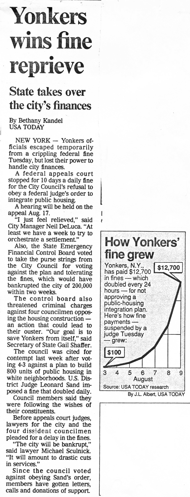

<html>

<head>
<meta http-equiv="Content-Type" content="text/html; charset=windows-1252">
<meta name="GENERATOR" content="Microsoft FrontPage 4.0">
<meta name="ProgId" content="FrontPage.Editor.Document">
<title>New Page 1</title>
</head>

<body>

<p>&nbsp;</p>
<p align="center">&nbsp;<font size="5" color="#800080"><b>Population increase&nbsp;</b></font></p>
<p align="center"><font size="5" color="#800080"><b> and Yonkers, NY fined/Chapter 8</b></font></p>
<p align="center">&nbsp;</p>
<p align="left"><font color="#000000" size="3">The population of a town is
32000; if this increases 3% per year, what will the population be in 7 years?</font></p>
<p>The population after 1 year is 32000*.03 +&nbsp; 32000 = 32000*(1+.03)=
32000*1.03<font size="2"><b><sup>1</sup></b></font>=32960</p>
<blockquote>
  <blockquote>
    <blockquote>
      <blockquote>
        <blockquote>
          <blockquote>
            <blockquote>
              <blockquote>
                <p align="center">The program to do this in <i>Mathematica </i>is:<i>&nbsp;</i>
                <font color="#0000FF"><b>Do[Print[32000*1.03^x],{x,7}]</b></font></p>
              </blockquote>
            </blockquote>
                                <p>The population after 1 year is&nbsp;&nbsp; 32960.</p>
                                <p>&nbsp;&nbsp;&nbsp;&nbsp;&nbsp;&nbsp;&nbsp;&nbsp;&nbsp;&nbsp;&nbsp;&nbsp;&nbsp;&nbsp;&nbsp;&nbsp;&nbsp;&nbsp;&nbsp;&nbsp;&nbsp;&nbsp;&nbsp;&nbsp;&nbsp;&nbsp;&nbsp;&nbsp;&nbsp;&nbsp;&nbsp;&nbsp;&nbsp;&nbsp;&nbsp;&nbsp;&nbsp;&nbsp;&nbsp;&nbsp;&nbsp;&nbsp;&nbsp;&nbsp;&nbsp;&nbsp;&nbsp;
                                33948.8</p>
            <p>&nbsp;&nbsp;&nbsp;&nbsp;&nbsp;&nbsp;&nbsp;&nbsp;&nbsp;&nbsp;&nbsp;&nbsp;&nbsp;&nbsp;&nbsp;&nbsp;&nbsp;&nbsp;&nbsp;&nbsp;&nbsp;&nbsp;&nbsp;&nbsp;&nbsp;&nbsp;&nbsp;&nbsp;&nbsp;&nbsp;&nbsp;&nbsp;&nbsp;&nbsp;&nbsp;&nbsp;&nbsp;&nbsp;&nbsp;&nbsp;&nbsp;&nbsp;&nbsp;&nbsp;&nbsp;&nbsp;&nbsp;
            34967.3</p>
            <p>&nbsp;&nbsp;&nbsp;&nbsp;&nbsp;&nbsp;&nbsp;&nbsp;&nbsp;&nbsp;&nbsp;&nbsp;&nbsp;&nbsp;&nbsp;&nbsp;&nbsp;&nbsp;&nbsp;&nbsp;&nbsp;&nbsp;&nbsp;&nbsp;&nbsp;&nbsp;&nbsp;&nbsp;&nbsp;&nbsp;&nbsp;&nbsp;&nbsp;&nbsp;&nbsp;&nbsp;&nbsp;&nbsp;&nbsp;&nbsp;&nbsp;&nbsp;&nbsp;&nbsp;&nbsp;&nbsp;&nbsp;
            36016.3</p>
            <p>&nbsp;&nbsp;&nbsp;&nbsp;&nbsp;&nbsp;&nbsp;&nbsp;&nbsp;&nbsp;&nbsp;&nbsp;&nbsp;&nbsp;&nbsp;&nbsp;&nbsp;&nbsp;&nbsp;&nbsp;&nbsp;&nbsp;&nbsp;&nbsp;&nbsp;&nbsp;&nbsp;&nbsp;&nbsp;&nbsp;&nbsp;&nbsp;&nbsp;&nbsp;&nbsp;&nbsp;&nbsp;&nbsp;&nbsp;&nbsp;&nbsp;&nbsp;&nbsp;&nbsp;&nbsp;&nbsp;&nbsp;
            37096.8</p>
            <p>&nbsp;&nbsp;&nbsp;&nbsp;&nbsp;&nbsp;&nbsp;&nbsp;&nbsp;&nbsp;&nbsp;&nbsp;&nbsp;&nbsp;&nbsp;&nbsp;&nbsp;&nbsp;&nbsp;&nbsp;&nbsp;&nbsp;&nbsp;&nbsp;&nbsp;&nbsp;&nbsp;&nbsp;&nbsp;&nbsp;&nbsp;&nbsp;&nbsp;&nbsp;&nbsp;&nbsp;&nbsp;&nbsp;&nbsp;&nbsp;&nbsp;&nbsp;&nbsp;&nbsp;&nbsp;&nbsp;&nbsp;
            38209.7</p>
            <p>The population after <font color="#FF0000"><b>7</b></font> years
            is&nbsp; 39356.</p>
            <hr>
            
            <p align="center"><b><font color="#800080" size="6">
            <p>Math in the News</font></b>
          </blockquote>
        </blockquote>
      </blockquote>
    </blockquote>
  </blockquote>
</blockquote>
<p align="center"></p>
<p align="center"><font color="#800080" size="5"><b>Where does the $12,700 come
from?</b></font></p>
<p align="left"><font color="#000000" size="3"><b>The fine was started at
$100&nbsp; on Aug. 3, day 1. On August 4 this fine was doubled to $200, and the total fine
paid after 2 days was $100 + $200 = $300. After the 3rd day, the fine for the
day was $400 (from doubling the $200) + the $300 added from the 2nd day= $700.</b></font></p>
<p align="left"><font color="#000000" size="3"><b>Don wrote the program
in <i>Mathematica</i> to get the fine each day. Notice on the 7th day, the fine
was $12,700 and after 2 weeks the fine would have been over $1,000,000, closer
to $2 million!</b></font></p>
            
<p class="MsoNormal" align="center">Do[Print[x,-100*(2^x-1)],{x,14}]<o:p>
</o:p>
</p>
<blockquote>
  <blockquote>
    <blockquote>
      <blockquote>
        <blockquote>
          <blockquote>
            <blockquote>
              <blockquote>
                <blockquote>
                  <blockquote>
                    <p class="MsoNormal" style="mso-layout-grid-align:none;text-autospace:none">1
                    -100<o:p>
                    </o:p>
                    </p>
                    <p class="MsoNormal" style="mso-layout-grid-align:none;text-autospace:none">2
                    -300<o:p>
                    </o:p>
                    </p>
                    <p class="MsoNormal" style="mso-layout-grid-align:none;text-autospace:none">3
                    -700<o:p>
                    </o:p>
                    </p>
                    <p class="MsoNormal" style="mso-layout-grid-align:none;text-autospace:none">4
                    -1500<o:p>
                    </o:p>
                    </p>
                    <p class="MsoNormal" style="mso-layout-grid-align:none;text-autospace:none">5
                    -3100<o:p>
                    </o:p>
                    </p>
                    <p class="MsoNormal" style="mso-layout-grid-align:none;text-autospace:none">6
                    -6300<o:p>
                    </o:p>
                    </p>
                    <p class="MsoNormal" style="mso-layout-grid-align:none;text-autospace:none"><font color="#FF0000"><b>7</b></font>
                    -<font color="#FF0000"><b>12700</b></font><o:p>
                    </o:p>
                    </p>
                    <p class="MsoNormal" style="mso-layout-grid-align:none;text-autospace:none">8
                    -25500<o:p>
                    </o:p>
                    </p>
                    <p class="MsoNormal" style="mso-layout-grid-align:none;text-autospace:none">9
                    -51100<o:p>
                    </o:p>
                    </p>
                    <p class="MsoNormal" style="mso-layout-grid-align:none;text-autospace:none">10
                    -102300<o:p>
                    </o:p>
                    </p>
                    <p class="MsoNormal" style="mso-layout-grid-align:none;text-autospace:none">11
                    -204700<o:p>
                    </o:p>
                    </p>
                    <p class="MsoNormal" style="mso-layout-grid-align:none;text-autospace:none">12
                    -409500<o:p>
                    </o:p>
                    </p>
                    <p class="MsoNormal" style="mso-layout-grid-align:none;text-autospace:none">13
                    -819100<o:p>
                    </o:p>
                    </p>
                    <p class="MsoNormal"><font color="#FF0000"><b>14 -1638300</b></font><o:p>
                    </o:p>
                    </p>
                  </blockquote>
                </blockquote>
              </blockquote>
            </blockquote>
          </blockquote>
        </blockquote>
      </blockquote>
    </blockquote>
  </blockquote>
</blockquote>
<p align="left">In both cases above we have an exponential function. The first
case is 1.03 to the x, 3% increase per <font color="#FF0000"><b>year</b></font>;
the second case is 2 to the x, doubling each <font color="#FF0000"><b>day</b></font>-
a big difference. Notice also that we get an <font color="#FF0000"><b>infinite
sequence</b></font> in both cases, and they both <font color="#FF0000"><b>diverge</b></font>,
they don't approach a number.</p>
            
</body>

</html>
